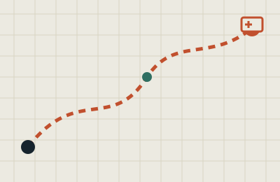

Hệ Thống Điều Phối Xe Cứu Thương
Dự án C cá nhân mô phỏng điều phối xe cứu thương tại TP.HCM: dựng đồ thị bệnh viện với toạ độ GPS thật, dùng thuật toán Dijkstra để tìm đường đi ngắn nhất, tìm kiếm địa chỉ tiếng Việt không dấu, và giao diện dòng lệnh có bảng quản trị.
Xem chi tiết trên GitHub →